Use the sticky bar at the top to return to the documentation index, open the user manual, or go back to the Web Portal. From the portal, Help opens this page in a new tab. This topic explains what the screen is for, how to work through it, and—where relevant—numbered steps. Open the full user guide for every section and the table of contents. For a printable module-by-module reference, use the User manual (by module) (each chapter has previous and next links).
Contents
Supply chain at a glance
Macavation follows two product streams plus shared support. Each topic below describes a specific screen.
Oil & protein stream: Supplier intake → Oil production → Stock (oil/protein) → Oil & protein dispatch.
Shared & admin: CRM, Quality, Documents, integrations, Users, Admin, and My Day support both streams.
Admin — Roles management
Roles management — define and maintain roles used for menu and permission assignment.
Edit roles here; deep permission matrices may live in User Management modules depending on deployment.
How to use this screen
Open Admin → Roles management tab.
Review existing roles in the grid; use search, status filter, and Clear as needed.
Click Add Role on the toolbar (or the equivalent in your build) to define a new role name and description.
After saving roles, assign Role permissions and Role features in User Management so menus match responsibility.
Admin — System configuration
System configuration — environment and system settings (as exposed for your deployment).
Record values before changing system settings; some options need vendor support to roll back safely.
How to use this screen
Open Admin → System configuration tab.
Record current values (screenshot or export) before changing environment or integration settings.
Edit only fields you understand; some options may require vendor support to reverse.
Save and verify behaviour in a non-critical module before announcing the change to all users.
Admin — Users & permissions
Users & permissions — system users table, role filter, and add user. Summary cards above show counts for the whole admin module.
Start from summary cards, then filter the users grid. Add User follows the same validation as other admin entry points.
How to use this screen
Open Admin from the menu.
Stay on the Users & Permissions tab (first tab).
Read the summary cards (totals for users, roles, permissions, sessions) for a quick health check.
Use the users grid filters and search; click Add User to open the add-user dialog with the right role from the start.
Use row actions to edit or deactivate users; changes typically apply on next login.
Admin Add Role (dialog)
Dialog opened from the related module. Complete required fields (marked), then save. Use Cancel or the close button to dismiss without saving.
How to use this screen
Open from Admin → Add role.
Enter a clear role name and description other admins will recognise.
Save, then open Role permissions and Role features to wire the role to real access.
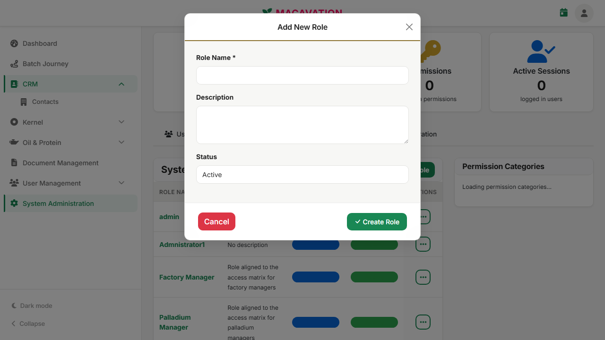
Admin Add User (dialog)
Dialog opened from the related module. Complete required fields (marked), then save. Use Cancel or the close button to dismiss without saving.
How to use this screen
Open from Admin → Add user.
Enter name, email/username, and temporary password policy per your organisation.
Assign the primary role before saving—this controls the menu tree on first login.
Send the user your standard onboarding steps (password change, MFA if enabled).
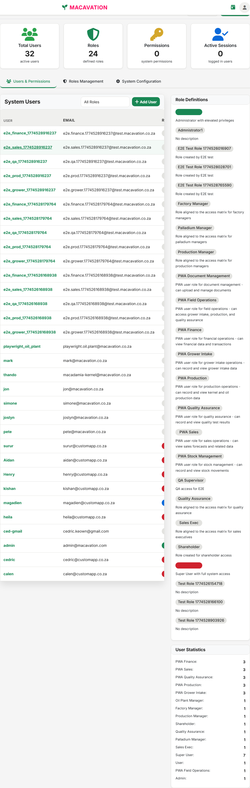
Batch History (dialog)
Dialog opened from the related module. Complete required fields (marked), then save. Use Cancel or the close button to dismiss without saving.
How to use this screen
Open to read the audit-style history of status changes and user actions on a batch.
Use during investigations; do not edit history entries.
Batch Journey (module)
Cross-batch search and status across intake, production, QA, and dispatch.
Search by batch or filters, open a row’s detail, then jump to owning module for the next action. Ideal when you know the batch ID but not where it sits.
How to use this screen
Open Batch journey when you know a batch id or grower but not which module currently owns the work.
Type in the search field (batch, grower, etc.); set Status and Sort (newest, by status, by grower, weight, moisture) to shorten the list.
Read the Status column for Intake, Receiving, Production, QA, Dispatch, or Complete.
Click a row (outside Edit) to open batch history.
Use Edit at the end of a row for actions: Delete permanently removes that kernel batch from the database (irreversible). Prefer soft delete from Grower Intake / Kernel Production when you only need to hide a batch.
Use links from batch history or owning modules to jump into intake, production, QA, or dispatch.
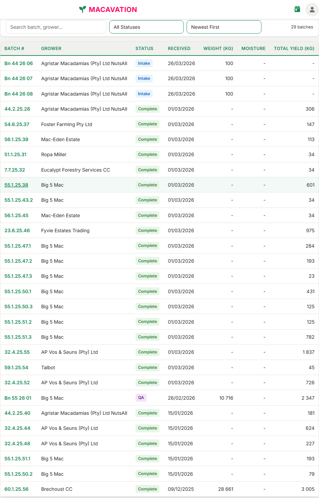
Batch Summary (dialog)
Dialog opened from the related module. Complete required fields (marked), then save. Use Cancel or the close button to dismiss without saving.
How to use this screen
Open from batch cards or journey views to see consolidated batch metadata.
Use it to confirm grower, weights, moisture, and status before answering customer queries.
CRM — Kernel customers
Kernel customers — kernel-side customers. Use filters and Add Contact to keep the list current for kernel dispatch and CRM.
Supports kernel sales and dispatch: accurate delivery contacts reduce errors on despatch documents.
How to use this screen
Open CRM — Contact Database Management from the menu.
Click the Kernel Customers tab.
Expand Filters to locate a customer before editing.
Use Add Contact or Import from Excel to keep delivery and commercial details current.
Edit from the grid as needed; updates feed through to kernel dispatch and CRM views that use these customers.
CRM — NIS suppliers
NIS suppliers — numbered grower/supplier list used with kernel intake and reporting. Import from Excel or add contacts; used across grower intake and dispatch.
Keep the numbered list aligned with operations: import from Excel when bulk-updating, or Add Contact for one-offs. These names appear in grower intake and kernel reporting.
How to use this screen
Open CRM — Contact Database Management from the menu.
Click the NIS Suppliers tab so the grid shows the numbered grower / supplier list.
Expand Filters when you need to narrow by province, status, or other fields on that tab.
Use Add Contact for a single record, or Import from Excel for bulk updates — keep the template column headers unchanged.
Open a row to edit; saved details are used in grower intake, kernel reporting, and kernel dispatch wherever that supplier appears.
CRM — Oil & protein customers
Oil & protein customers — buyers for oil/protein products. Maintain names, contacts, and status for sales and dispatch.
Keep commercial contacts current for sales and dispatch paperwork. Status and emails should match what dispatch and account teams use offline.
How to use this screen
Open CRM — Contact Database Management from the menu.
Click the Oil & Protein Customers tab.
Expand Filters to narrow buyers or commercial contacts.
Use Add Contact or Import from Excel to add or refresh customer records.
Open a row to edit; accurate names and contacts reduce errors on oil & protein sales and dispatch paperwork.
CRM — Oil ingredient suppliers
Oil ingredient suppliers — raw material and ingredient suppliers for oil & protein operations. Same tools as other CRM tabs: filters, import, add contact.
Used for raw-material suppliers feeding oil & protein. After changes, notify planners so stock and intake expectations stay aligned.
How to use this screen
Open CRM — Contact Database Management from the menu.
Click the Oil Ingredient Suppliers tab.
Expand Filters to find raw-material or ingredient suppliers quickly.
Use Add Contact or Import from Excel to maintain the list.
Edit a row to update supplier data used by oil & protein intake, stock, and production screens that reference these contacts.
CRM — Oil processors
Oil processors — organisations classified as oil processors. Filter the grid, export, and add or edit contacts for the oil stream.
Maintain processor details for the oil stream; filters and export help audits. Edits apply wherever that contact is picked (intake, production, dispatch).
How to use this screen
Open CRM — Contact Database Management from the menu.
Click the Oil Processors tab.
Expand Filters to narrow the list before you add or edit records.
Use Add Contact or Import from Excel as appropriate; do not alter import template headers.
Open a row to edit processor details; changes apply anywhere oil processors are selected in the oil & protein stream.
Crm Contact (dialog)
Dialog opened from the related module. Complete required fields (marked), then save. Use Cancel or the close button to dismiss without saving.
How to use this screen
Open from CRM: Add contact or when editing an existing row.
Pick or confirm the contact type tab context (NIS supplier, oil customer, etc.) so the record lands in the right list.
Complete identity fields, phones, emails, and addresses as your dispatch and finance teams expect.
Save; the grid refreshes and downstream modules (intake, dispatch) can pick up the contact immediately.
Dashboard overview
Default operations dashboard: kernel production stats, packing, and task lists. Use the sidebar to open other modules.
Use cards and lists as a daily snapshot; follow links or the sidebar to open the full grids behind each metric. Refresh the page if numbers look stale.
How to use this screen
Open Dashboard overview from the sidebar, or land here by default after sign-in if your site is configured that way.
Read the summary cards (users, roles, production, packing, tasks—depending on what your build shows) for a snapshot of the day.
Click any card or embedded link that opens a drill-down grid or module; use the sidebar for everything else.
If figures look stale compared to the shop floor, refresh the browser page once before raising a support issue.
Download the right template, fill without altering column headers, upload, and read the import log. Fix the spreadsheet rather than re-importing the same errors.
How to use this screen
Open Data import (Excel) from the menu.
Click Download template when you need the correct column layout for your target table.
Choose the Excel file, pick the target table (contacts, stock_items, oil_production_sheets, etc.), then click Preview.
In Map columns, match each spreadsheet column to the database field; fix the file if a column cannot map cleanly.
Review the preview row count, then click Import; read any log or error output and correct the sheet rather than re-uploading the same mistakes.
Document Management (module)
Store and organise operational documents linked to the business.
Upload with clear titles and categories; link to entities when offered so colleagues find files from batches or contacts later.
How to use this screen
Open Document management from the menu.
Maintain Categories first if your process needs new filing buckets—deleting a category hides it from pickers but keeps existing file links.
Click Upload document, pick a file, set title/category, and link to an entity if the form offers it.
Use the search box to find documents by name or category; clear the search to see the full list.
Use row actions to download, replace metadata, or remove files according to your retention rules.
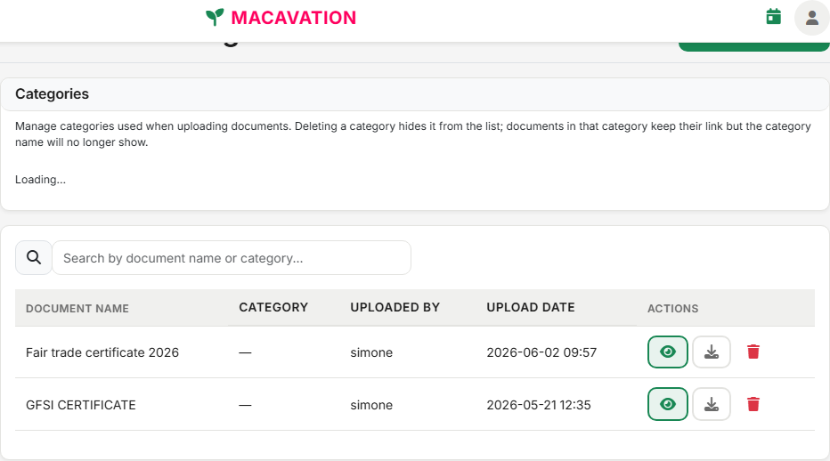
End Sample (dialog)
Dialog opened from the related module. Complete required fields (marked), then save. Use Cancel or the close button to dismiss without saving.
How to use this screen
Open from grower or QA flows when closing out a sample workflow.
Record final disposition and any retest requirement.
End Sample View (dialog)
Dialog opened from the related module. Complete required fields (marked), then save. Use Cancel or the close button to dismiss without saving.
How to use this screen
Open for read-only review of how a sample was closed.
Executive dashboard & reporting
KPIs and reporting for leadership. Use Customize to choose visible widgets and Generate Report for PDF output.
Choose widgets with Customize, export PDFs with Generate Report, and treat figures as summaries—drill into Kernel / Oil & protein modules for detail.
How to use this screen
Open Executive dashboard from the menu.
Click Customize (or equivalent) to choose which KPI widgets and charts appear.
Use Generate report or export controls when you need a PDF or file for meetings.
Treat numbers as summaries—open Kernel or Oil & protein modules for line-level detail when something needs investigation.
Feature (dialog)
Dialog opened from the related module. Complete required fields (marked), then save. Use Cancel or the close button to dismiss without saving.
How to use this screen
Open from Features grid to define or edit a feature key and description.
Use stable keys—changing keys later breaks role assignments.
Features (module)
Catalogue of application features for assignment to roles.
Treat as the catalogue of toggles—actual access still requires role assignment and menu configuration.
How to use this screen
Open Features from User Management (or your menu path).
Search by name, key, or description; filter by active/inactive; click Clear to reset.
Use Add feature to register a new application feature key for role assignment.
Use Refresh and Export when auditing which flags exist before a rollout.
Actual user access still requires that feature to be turned on for a role in Role features.
Financial Management (module)
Financial views and calculations supporting operations (where enabled).
Use for enabled financial snapshots; always reconcile with your authoritative ledger—this view supports operations, not statutory reporting.
How to use this screen
Open Financial management when your deployment enables it.
Click New invoice or Record payment from the toolbar to add transactions.
Review the grid columns (document number, type, contact, amount, date, status) before posting.
Use row Actions to open, edit, or void per your business rules.
Use Export for finance hand-off; reconcile against your ledger—this screen supports operations, not statutory reporting on its own.
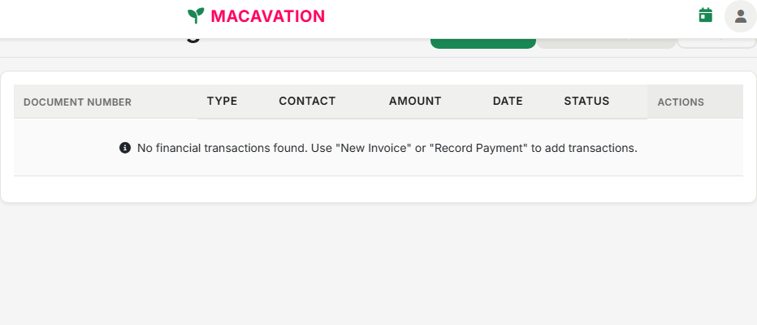
Grower Create Kernel Batch (dialog)
Dialog opened from the related module. Complete required fields (marked), then save. Use Cancel or the close button to dismiss without saving.
How to use this screen
Open from grower intake via Create kernel batch.
Enter grower, delivery metadata, and wet NIS details as prompted—tie to CRM NIS suppliers where pickers exist.
Save to create the intake batch; you will return to the board/table to run checklist and tests.
Grower Intake (module)
Kernel-side intake: receiving checklists, batch testing, and creating kernel batches before production.
Work delivery-by-delivery: complete receiving checklists, capture samples if required, then create or link kernel batches so production can start.
How to use this screen
Open Grower intake from the sidebar.
Use Search, Status, and Clear to find the batch; switch Board vs Table to match how you like to work.
For each delivery: complete the Receiving checklist (Stage 1) from the batch card or row actions—both batch test and batch sample unlock only after the checklist is done.
Use Create kernel batch when you need a new intake record; use Export for a spreadsheet snapshot when auditing.
When quality steps are satisfied, use Release to production (and silo selection if prompted) so Kernel Production can receive the batch.
Grower Link Sample To Batch (dialog)
Dialog opened from the related module. Complete required fields (marked), then save. Use Cancel or the close button to dismiss without saving.
How to use this screen
Open when linking a lab sample result to an intake batch.
Select the correct batch and sample identifiers; do not guess batch numbers.
Save so quality status can move to approved/pending per your rules.
Grower Receiving Checklist (dialog)
Dialog opened from the related module. Complete required fields (marked), then save. Use Cancel or the close button to dismiss without saving.
How to use this screen
Open from a grower intake batch card or row when Stage 1 (receiving) is due.
Work through each checklist line (weights, dockets, quality flags) exactly as operations defined.
Save; the batch card should show the checklist as complete so batch test and sample actions unlock.
If something is wrong with the delivery, record it here and escalate per QA before releasing forward.
Import Oil Lots (dialog)
Dialog opened from the related module. Complete required fields (marked), then save. Use Cancel or the close button to dismiss without saving.
How to use this screen
Open from stock when importing oil lots from Excel.
Use the template your admin provided; do not rename columns.
Preview and confirm row counts before committing.
Job Card View (dialog)
Dialog opened from the related module. Complete required fields (marked), then save. Use Cancel or the close button to dismiss without saving.
How to use this screen
Open from production or dispatch when viewing a read-only job card summary.
Use it to verify styles and quantities before authorising dispatch or QA.
Close when finished—no edits here if the dialog is view-only in your build.
Kernel Dispatch (dialog)
Dialog opened from the related module. Complete required fields (marked), then save. Use Cancel or the close button to dismiss without saving.
How to use this screen
Open from kernel dispatch when creating or editing a dispatch basket header (buyer, delivery date).
Pick kernel customers from CRM; lines usually come from stock send-to-dispatch.
Save before opening line-level or inspection forms.
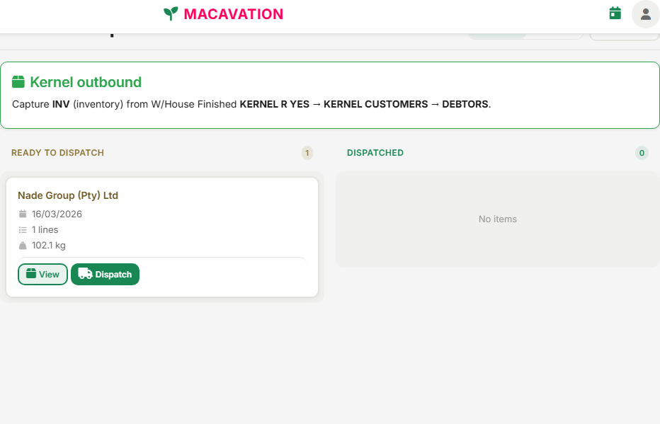
Kernel Dispatch (module)
Kernel finished goods: board/table views, dispatch basket, and inspection forms before despatch.
Build the dispatch basket from approved stock, complete inspections, then finalise documents. Fixes to stock usually happen in Stock Management, not here.
How to use this screen
Open Kernel dispatch; use Board vs Table and Refresh to align with how your despatch team works.
Remember the flow: inventory from finished warehouse KERNEL R YES moves to Kernel customers and debtors—baskets are built from stock sends.
In table view, open View basket to check styles and quantities before loading; use Dispatch to complete inspection and dispatch forms.
Review the Baskets marked as dispatched section for completed paperwork and proof of shipment.
If quantities are wrong, fix stock or the basket in Stock management rather than forcing a dispatch through.
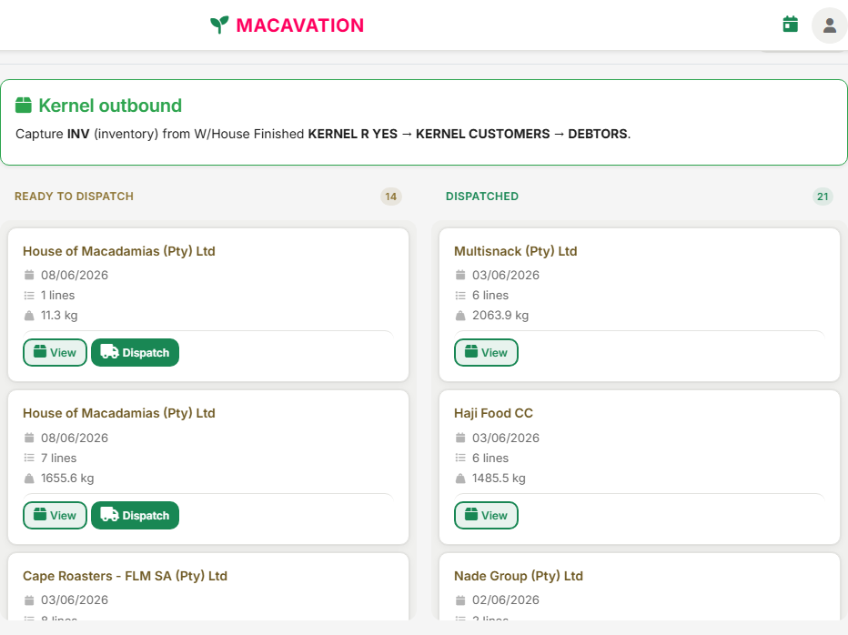
Kernel Dispatch Form (dialog)
Dialog opened from the related module. Complete required fields (marked), then save. Use Cancel or the close button to dismiss without saving.
How to use this screen
Open when completing inspection and dispatch paperwork for a kernel order.
Fill vehicle, seal, weight checks, and sign-offs as your logistics SOP requires.
Submit only after physical load matches the basket; fixes go back to stock or the basket, not forged paperwork.
Kernel Job Card (dialog)
Dialog opened from the related module. Complete required fields (marked), then save. Use Cancel or the close button to dismiss without saving.
How to use this screen
Open from kernel production for a batch entering or progressing production.
Fill job card fields (styles, yields, equipment) per your factory standard.
Save; downstream release-to-stock steps depend on accurate job card data.
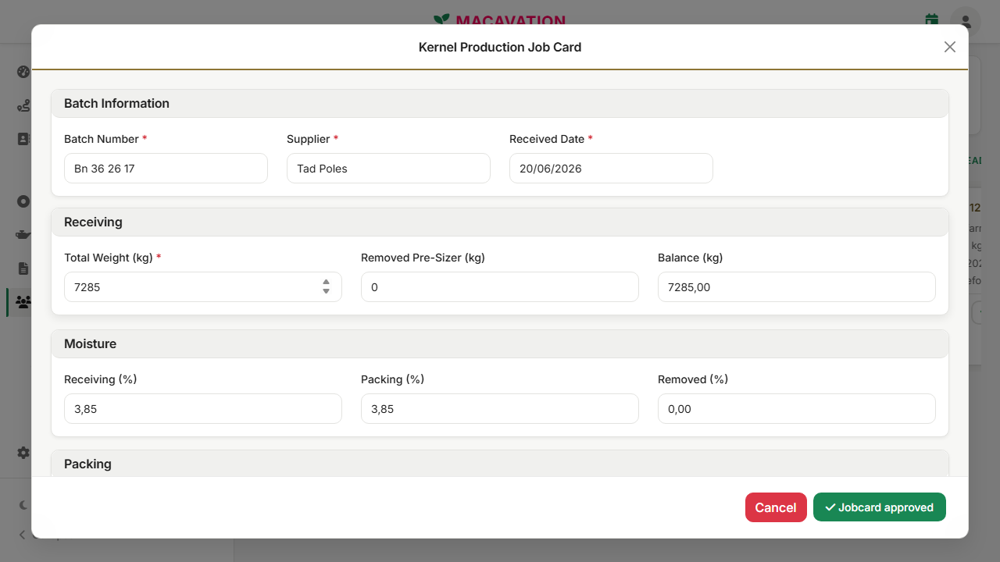
Kernel Production (module)
Production workflow: job cards, production stages, batch summaries, and QA hand-offs.
Drive job cards through stages; use board or list views as your site prefers. QA and stock hand-offs depend on accurate stage completion.
How to use this screen
Open Kernel production from the menu.
Review the Silos panel: click an occupied (red) silo to mark empty, or an empty (white) silo to mark full and pick a production batch from the list modal.
Search and filter batches; use Clear to reset. Toggle Board, Table, or Approved jobcards as needed.
Open a batch card or row to manage job cards, production stages, and QA hand-offs—complete stages in order so stock and release status stay truthful.
Use Export for reporting; when release-ready, follow the in-app actions to send finished product toward stock and dispatch per your process.
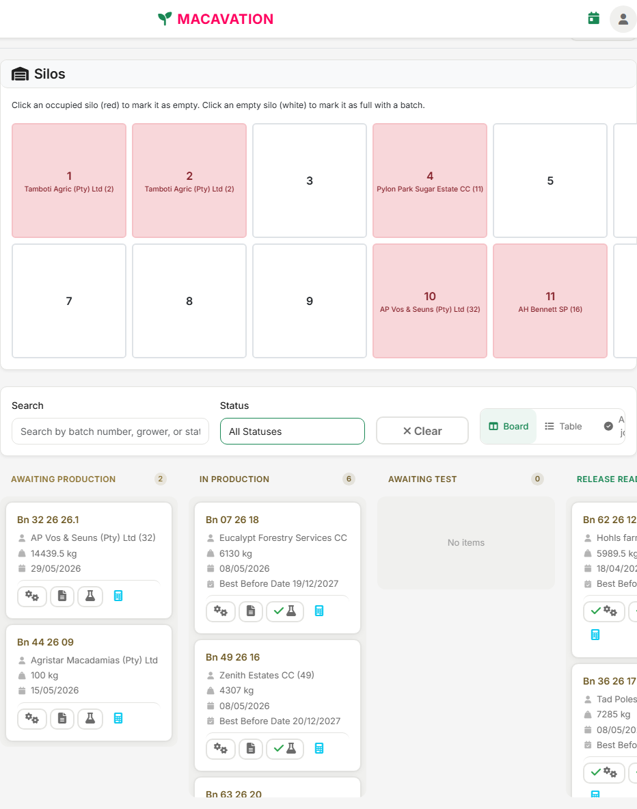
Material journey dashboard
Tracks material movement and alerts for integrator-style roles. Use Refresh to reload cards.
Reload with Refresh, then open linked modules from each card to clear alerts or continue a batch. Suited to roles watching movement across sites or stages.
How to use this screen
Open Material journey from the menu (typically used by integrator-style roles watching movement and risk).
Click Refresh to reload cards and alerts so you are not acting on cached data.
Scan each card for status, exceptions, or batches needing attention.
Use links or actions on a card to jump into the owning module (intake, production, stock, dispatch) and complete the work there.
My day (module)
Role-based landing view: your assigned workflows and shortcuts. Content loads after sign-in.
Work the list top-down: each item should route you to the right module. Completing work there updates what others see on dashboards and queues.
How to use this screen
Open My Day after sign-in (or from the sidebar) to see tasks and shortcuts assigned to your role.
Work items in priority order, or pick the highest-impact line first if your team agrees that rule.
Click each task or shortcut; the app should route you to the module that owns that step.
Completing work in those modules updates dashboards and queues for everyone else.
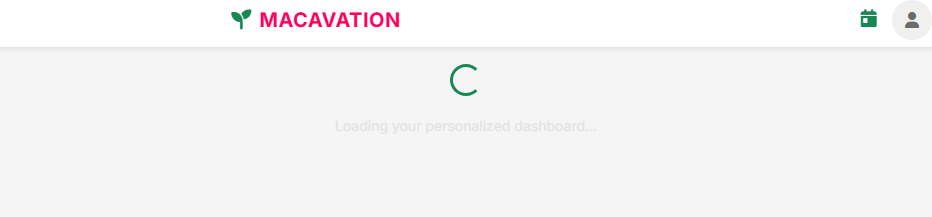
Oil Dispatch (dialog)
Dialog opened from the related module. Complete required fields (marked), then save. Use Cancel or the close button to dismiss without saving.
How to use this screen
Open from Oil dispatch when creating or editing a dispatch basket header (customer, delivery window, references).
Pick oil & protein customers from CRM where the form offers a lookup—match the sold-to party on the order.
Confirm only released oil lots and finished stock lines are referenced; if something is missing, fix it in Stock management first.
Save the header before opening line inspection or dispatch forms tied to this basket.
If validation fails, read the message—usually a missing customer, date, or line mismatch.
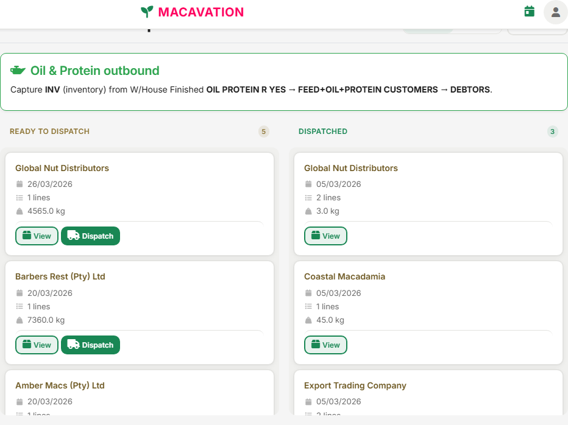
Oil Dispatch (module)
Oil & protein dispatch: mirror of kernel dispatch for the finished oil/protein warehouse location.
Same pattern as kernel dispatch for the oil/protein warehouse: basket, checks, then shipment. Ensure oil lots are released before loading.
How to use this screen
Open Oil & protein dispatch from the menu (mirror of kernel dispatch for the finished oil/protein warehouse).
Use the same board/table pattern and refresh habit as kernel dispatch.
Build or review baskets from released oil lots; complete inspection and dispatch forms before the truck leaves.
Ensure oil lots are released and available in stock before you add them to a load.
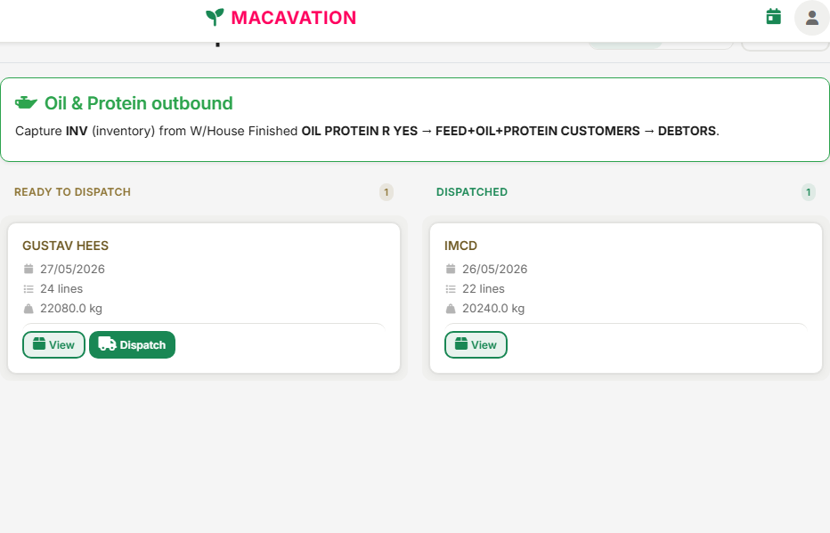
Oil Dispatch Form (dialog)
Dialog opened from the related module. Complete required fields (marked), then save. Use Cancel or the close button to dismiss without saving.
How to use this screen
Open for oil/protein inspection and despatch paperwork.
Complete checks, signatures, and transport details; submit when the load is true.
Oil Lot (dialog)
Dialog opened from the related module. Complete required fields (marked), then save. Use Cancel or the close button to dismiss without saving.
How to use this screen
Open when creating or editing an oil lot record tied to stock.
Enter best-before, quantity, and location; align with physical labels on drums or tanks.
Save before sending the lot to dispatch.
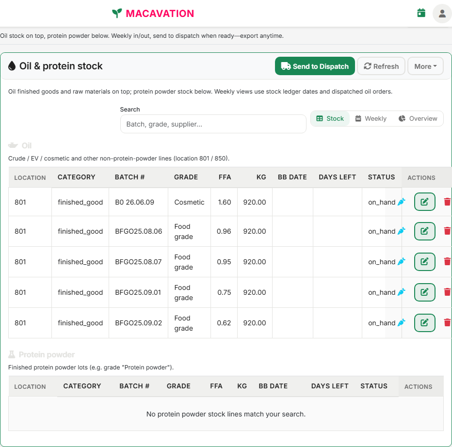
Oil Production (module)
Oil production sheets and related processing steps for the oil/protein stream.
Record production sheets and relate them to lots or batches as the UI prompts. This closes the loop between intake stock and finished oil/protein.
How to use this screen
Open Oil production from the menu.
Review Raw ingredients in production (batches released from Supplier Intake); open a batch to run extraction steps or mark a bag Empty when the press run is finished.
Expand Finished (emptied) raw batches if you need to audit what already left the active list.
Open or create a Production sheet (Food Grade Oil / Protein Powder / Cosmetic Oil) from the UI—choose form entry vs file upload if both are offered.
Use View data and Refresh on the toolbar for analytics and to reload lists after others have changed data.
Oil Production Sheet (dialog)
Dialog opened from the related module. Complete required fields (marked), then save. Use Cancel or the close button to dismiss without saving.
How to use this screen
Open from oil production when starting or editing a production sheet.
Choose Fill out the form vs Upload a file if both modes exist.
Enter yields, losses, and product splits; attach files if the run used external lab results.
Save so finished goods and stock can reflect the run.
Palladium Integration (module)
ERP integration settings and sync status with Palladium.
Check sync health and mapping; day-to-day posting still happens from operational modules according to your integration design.
How to use this screen
Open Palladium ERP integration from the menu.
Review the Sync status table: entity type, last sync, status, records synced.
Click Sync now only when your runbook allows (avoid double-runs during month-end unless approved).
Use row actions to inspect errors or retry failed entities as the UI permits.
Day-to-day operational posting still happens in Macavation modules; this screen is health and mapping for ERP bridge.
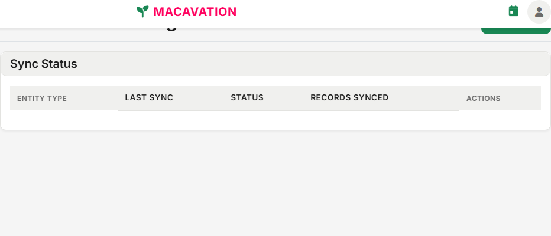
Production Stages (dialog)
Dialog opened from the related module. Complete required fields (marked), then save. Use Cancel or the close button to dismiss without saving.
How to use this screen
Open from kernel production to advance or edit production stages for a batch.
Move stages in order; do not skip mandatory QA stages if the UI enforces them.
Save after each meaningful change so the board reflects true floor status.
Production Stages View (dialog)
Dialog opened from the related module. Complete required fields (marked), then save. Use Cancel or the close button to dismiss without saving.
How to use this screen
Open to review stage history and timestamps without changing current state (if configured as read-only).
Use it during investigations when dispatch or QA questions where a batch stalled.
Quality Assurance (module)
Quality tests, thresholds, and food-safety related records.
Log tests against the referenced batch or item; failed or out-of-spec results may block the next step depending on configuration—follow local QA rules.
How to use this screen
Open Quality assurance from the menu.
Use Search, Test type, Result, and Clear to find the right record.
Click New quality test to log a new sample, batch, or final-product test as your process requires.
Open a row to enter results, attachments, or sign-off; failed or conditional results may block release depending on configuration—follow your local QA playbook.
Use Export when auditors or customers need evidence outside the app.
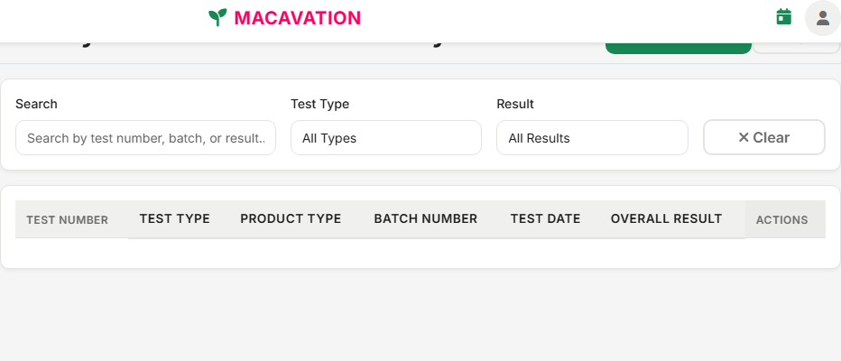
Quality Test (dialog)
Dialog opened from the related module. Complete required fields (marked), then save. Use Cancel or the close button to dismiss without saving.
How to use this screen
Open from QA grid when logging or editing a specific test result.
Choose pass/fail/conditional and attach evidence files if required.
Save; failed tests may block release depending on configuration.
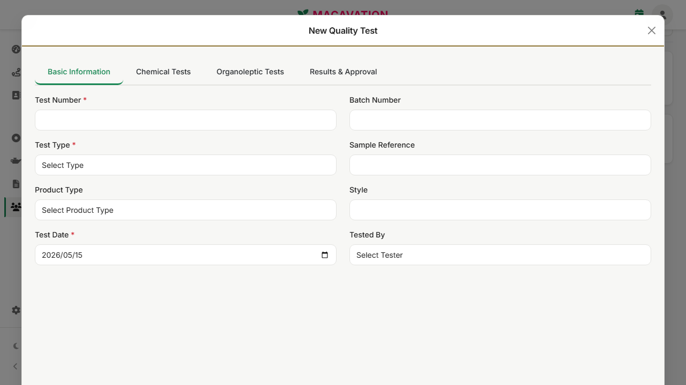
Raw Material Issued (dialog)
Dialog opened from the related module. Complete required fields (marked), then save. Use Cancel or the close button to dismiss without saving.
How to use this screen
Open when recording raw material issued to production from stock.
Link to the correct batch or job; quantities reduce raw stock when saved.
Receiving Checklist (dialog)
Dialog opened from the related module. Complete required fields (marked), then save. Use Cancel or the close button to dismiss without saving.
How to use this screen
Open from stock or supplier flows when a receiving checklist is required for a movement.
Complete quantities, condition checks, and sign-off fields.
Save so stock and intake statuses can advance.
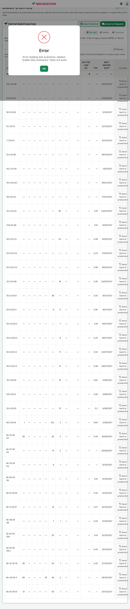
Role (dialog)
Dialog opened from the related module. Complete required fields (marked), then save. Use Cancel or the close button to dismiss without saving.
How to use this screen
Open from Roles grid when adding or editing a role inline.
Match naming conventions your organisation uses for SSO or audits.
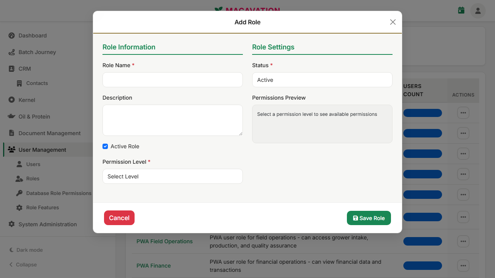
Role Feature (dialog)
Dialog opened from the related module. Complete required fields (marked), then save. Use Cancel or the close button to dismiss without saving.
How to use this screen
Open from Role features to tie a feature flag to a role.
Toggle once per combination; document the change.
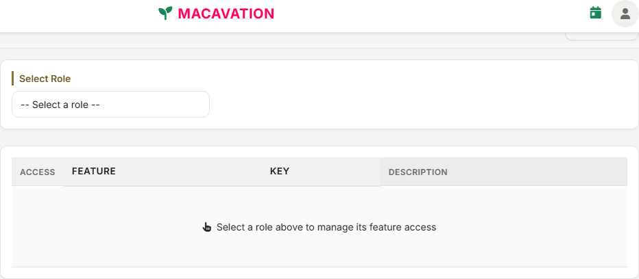
Role features (module)
Toggle feature flags per role for progressive rollout.
Toggle features per role for phased rollouts; document what each flag unlocks so support can answer user questions.
How to use this screen
Open Role features from User Management.
Locate the role and feature combination; toggle flags for phased rollouts of new UI or APIs.
Use export/refresh controls like other admin grids.
Document what each feature flag unlocks so support can answer “why don’t I see X?”.
Remember: users must still have the underlying role assignment and menu access—features are not a substitute for permissions.
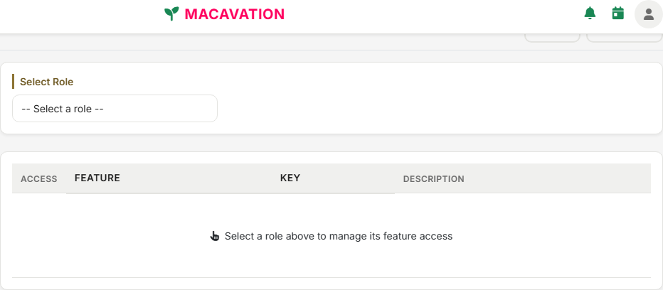
Role Permission (dialog)
Dialog opened from the related module. Complete required fields (marked), then save. Use Cancel or the close button to dismiss without saving.
How to use this screen
Open from Role permissions when mapping a role to a database object.
Pick object type, object name, and allowed operations—grant least privilege.
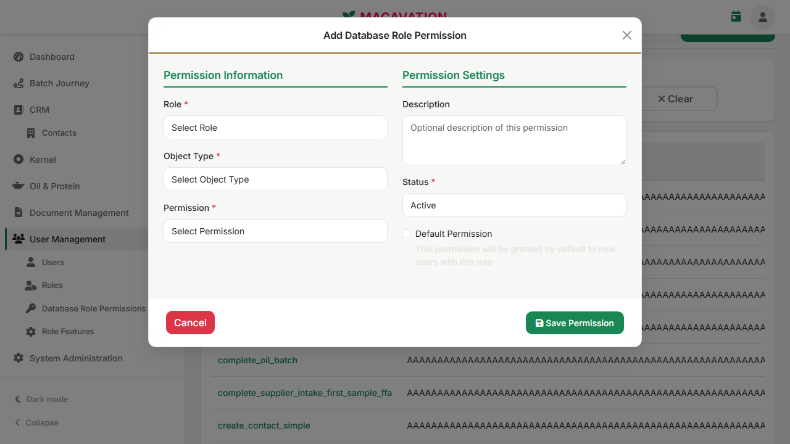
Role permissions (module)
Map roles to database permissions (functions, tables).
Grant least privilege: add permissions incrementally and test with a non-admin login before rolling out broadly.
How to use this screen
Open Role permissions from User Management.
Filter by role, object type (function/table), and operation (EXECUTE, Read, Create, Update, Delete); use Clear when needed.
Click Add permission to grant a role access to a specific object—add the minimum set first.
Use Refresh and Export when documenting access reviews.
Test with a non-admin login after changes; verify the user can do their job but cannot see restricted modules.
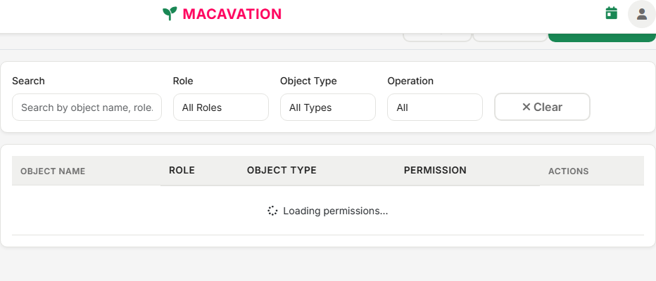
Roles (module)
Define named roles used for menu and permission assignment.
Name roles clearly for admins; after saving, assign permissions and features in their dedicated screens.
How to use this screen
Open Roles from User Management.
Search and filter by active/inactive; click Clear to reset the grid.
Click Add role for a new named role, or open a row to edit description and status.
Use Refresh after others change data; Export before audits.
Pair each role with entries in Role permissions and Role features so menus and APIs stay aligned.
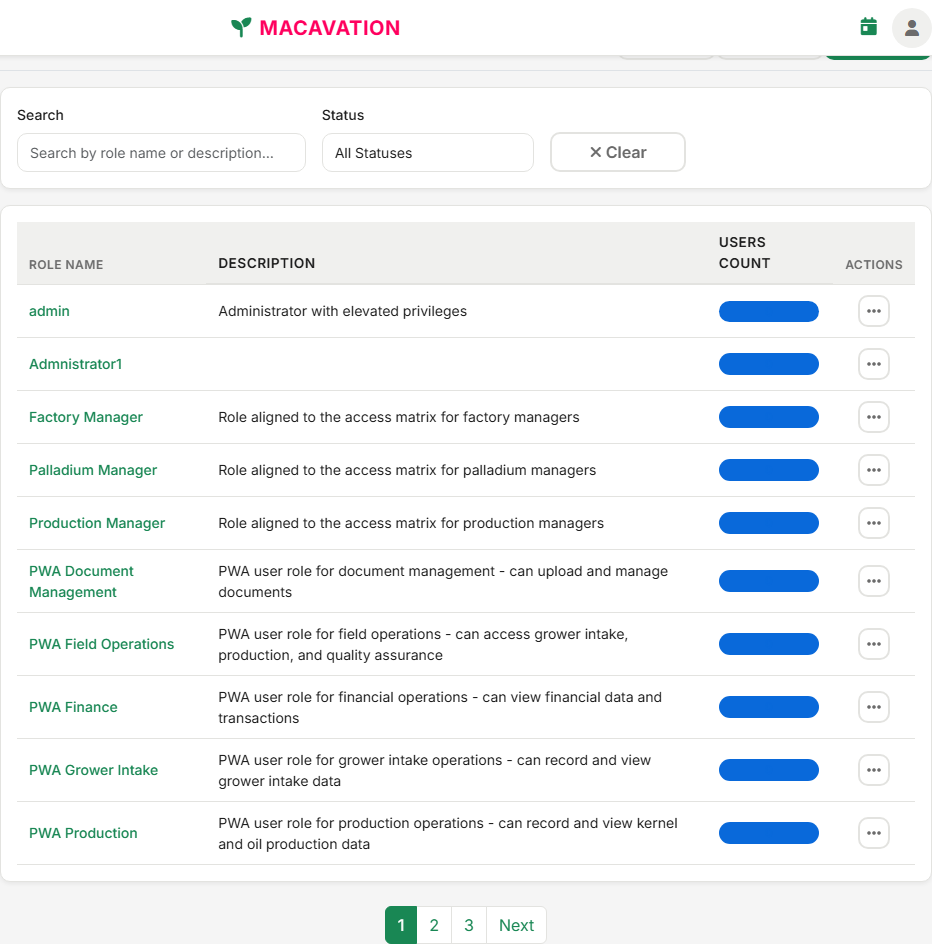
Sales Forecasting (module)
Demand and forecasting inputs for planning.
Maintain forecast versions planners compare to production capacity and stock. Coordinate with finance or supply if numbers feed external systems.
How to use this screen
Open Sales forecasting from the menu.
Click New forecast to add a period, product type, quantity, confidence, and status.
Review existing rows in the table; use actions to revise or close versions planners no longer use.
Click Export when supply or finance needs the numbers in Excel.
Align forecast versions with production capacity meetings—do not treat this as the only source of truth if finance maintains a master file.
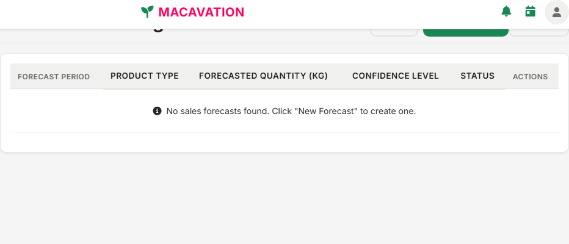
Send To Dispatch (dialog)
Dialog opened from the related module. Complete required fields (marked), then save. Use Cancel or the close button to dismiss without saving.
How to use this screen
Open from Stock management (kernel) after selecting finished kernel lines to move toward dispatch.
Confirm customer, delivery date, and quantities match what sales agreed.
Submit; the basket should appear in Kernel dispatch for final inspection.
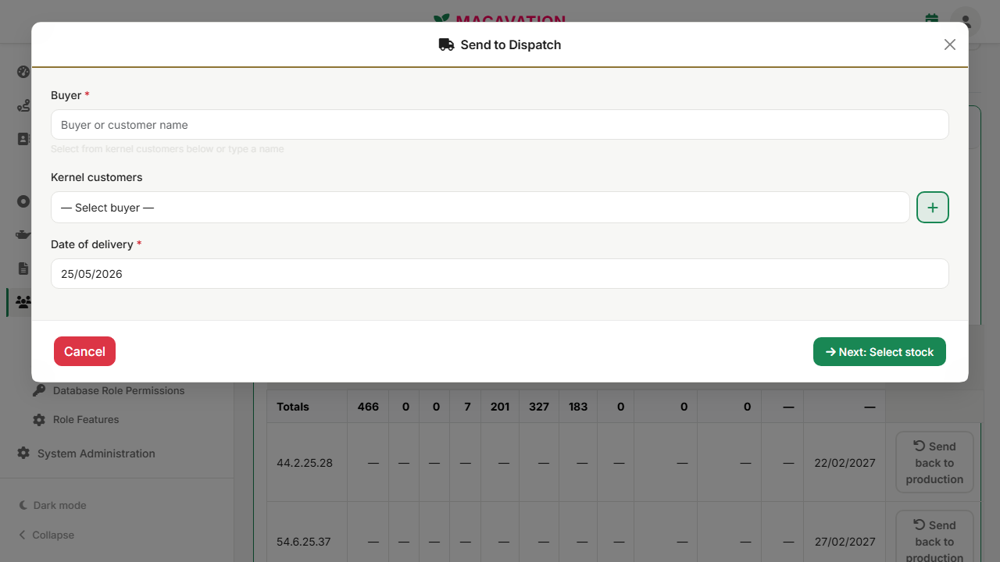
Send To Dispatch Oil (dialog)
Dialog opened from the related module. Complete required fields (marked), then save. Use Cancel or the close button to dismiss without saving.
How to use this screen
Open from oil stock when sending finished oil/protein lots toward oil dispatch.
Verify lot numbers, best-before, and quantities against the warehouse.
Submit; complete oil dispatch forms from the dispatch module.
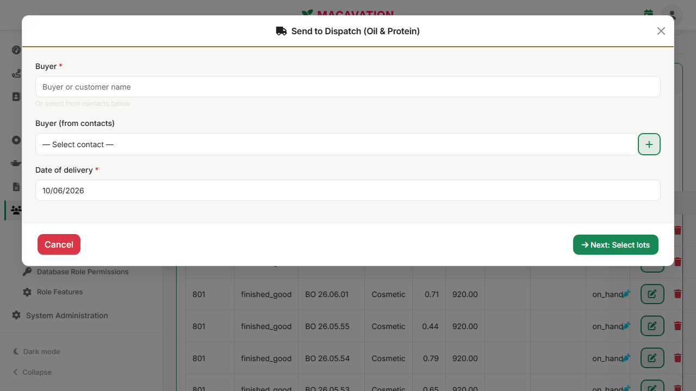
Stock Management (module)
Warehouse views for kernel and oil/protein stock; filters, export, send to dispatch, and oil lot management.
Confirm location and product filters before transactions. Send-to-dispatch and oil-lot actions should only run when physical stock matches the system.
How to use this screen
Open Stock management; note whether you are on the Kernel or Oil & protein stream (subtitle and filters adapt).
For the main stock table: use Search, Status, Product type, and Location (warehouse section); click Clear to reset.
On Kernel batch journey: use By style / Weekly / Overview; select lines and use Send to Dispatch only when physical stock matches the system.
For oil: add or import oil lots (e.g. from Excel) and monitor days-remaining from best-before where shown; use export when you need a file copy.
Use Import historical only for the controlled kernel historical load your admin approved—never as a substitute for normal intake and production postings.
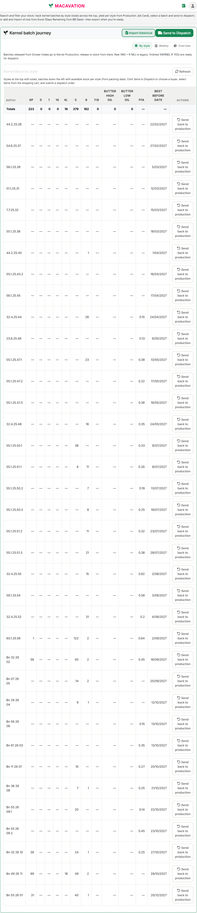
Stock Take (dialog)
Dialog opened from the related module. Complete required fields (marked), then save. Use Cancel or the close button to dismiss without saving.
How to use this screen
Open from stock management when running a stock-take or adjustment workflow.
Count physically first, then enter counted quantities; explain variances in notes if required.
Submit for approval if your workflow includes a reviewer.
Supplier Intake (module)
Oil & protein intake: supplier oil batches and receiver checklists tied to CRM suppliers.
Register supplier oil batches and receiver checklists; they must tie to CRM suppliers. Downstream stock and production consume these records.
How to use this screen
Open Supplier intake from the menu.
Use search, status filter, and Clear; choose Board, Table, Weekly, or Overview from the view toggle.
Start new oil-side deliveries with Receiver checklist; that creates the batch you will track through sample tests.
Adjust stock uses the same date rule: capture manufactured date and the system auto-calculates best before as +18 months.
Complete sample tests from the card/table when the UI enables them; status moves toward ready for oil production.
Use Export when you need to share the current intake list outside the app.
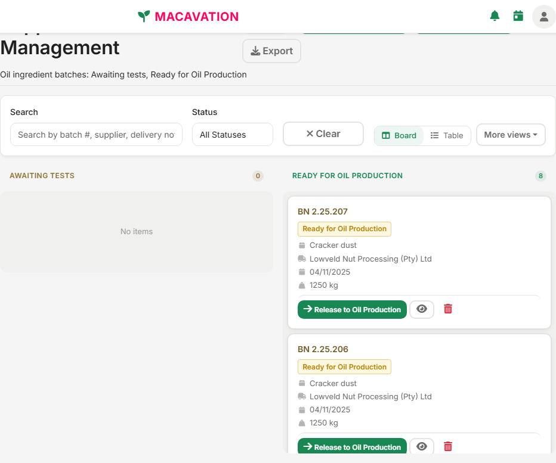
Supplier Oil Batch (dialog)
Dialog opened from the related module. Complete required fields (marked), then save. Use Cancel or the close button to dismiss without saving.
How to use this screen
Open from supplier intake row actions when editing batch header details.
Adjust only fields your role is allowed to change after receiving; some values may be locked post-test.
Save and confirm status still matches physical stock before releasing to production.
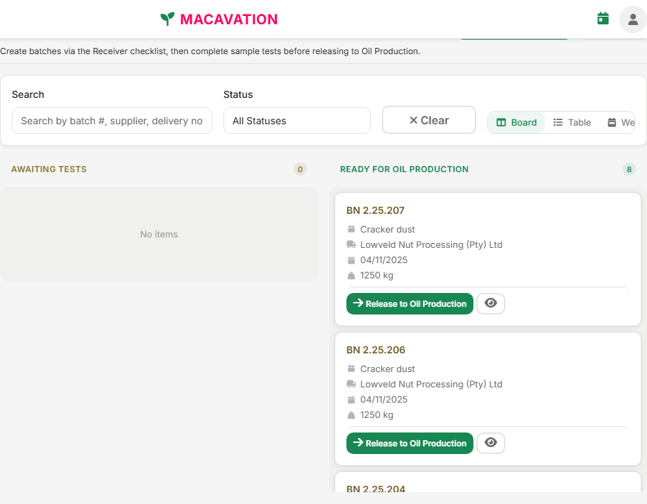
Supplier Receiver Checklist (dialog)
Dialog opened from the related module. Complete required fields (marked), then save. Use Cancel or the close button to dismiss without saving.
How to use this screen
Open from supplier intake via Receiver checklist to start a new supplier oil delivery.
Capture delivery note, supplier from CRM, quantities, product type, and manufactured date for each bag.
Best before date is calculated automatically as 18 months after manufactured date.
Add bag asks how many rows to create, copies values from the first bag row, and auto-increments the batch number sequence for each new row.
Submit to create the batch that will appear on the board for sample testing and release to oil production.
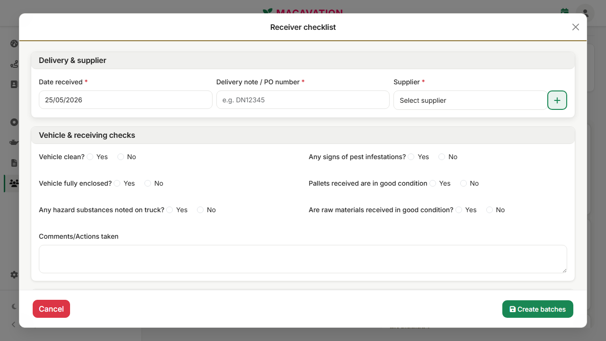
Supply chain & process flow
Read-only process diagram and quick links into Grower Intake, Stock, and Oil Production. (Not all deployments expose this as a route.)
Use this page to orient new users: follow Open links into live modules. This screen does not edit operational data — use intake, production, stock, and dispatch modules for that.
How to use this screen
Open Supply chain & process flow when you need the big picture (Mermaid diagram: intake → warehouse raws → production → finished → customers / debtors).
Read the document-type hints (GRV, IBT, INV) so paperwork in dispatch matches what finance expects.
Use the toolbar shortcuts to jump to Grower intake, Stock, or Oil production in one click.
This page is read-only for orientation—create and edit batches only inside the operational modules.
Test data — Data sets
Data sets — create and manage synthetic data sets for test scenarios. Use filters, search, and export.
Define a set per scenario or feature area, then seed records. Export sets to share fixtures across testers.
How to use this screen
Open Test data management (non-production / QA environments).
Select the Data sets tab; expand Filters (module, entity type, purpose) and click Apply filters / Clear as needed.
Click Add data set; name it for the scenario or feature you are testing.
Open a set from the grid to review or edit metadata; export sets to share fixtures with other testers.
Never use test data tools on production databases.
Test data — Records
Records — individual test data records within sets. Add records after selecting or creating a data set.
Add records after choosing a parent set; bulk tools (if shown) should stay within test data only.
How to use this screen
Open Test data management → Records tab.
Select or create a parent data set first—the add-record button is enabled in context.
Click Add record and fill entity fields that mirror production shape but with synthetic values.
Use filters to find records; bulk actions (if shown) must stay within test data tables only.
Export or duplicate sets when multiple testers need the same baseline.
Test Data Record (dialog)
Dialog opened from the related module. Complete required fields (marked), then save. Use Cancel or the close button to dismiss without saving.
How to use this screen
Open to edit one synthetic record’s JSON/fields for a scenario.
Keep values obviously non-production.
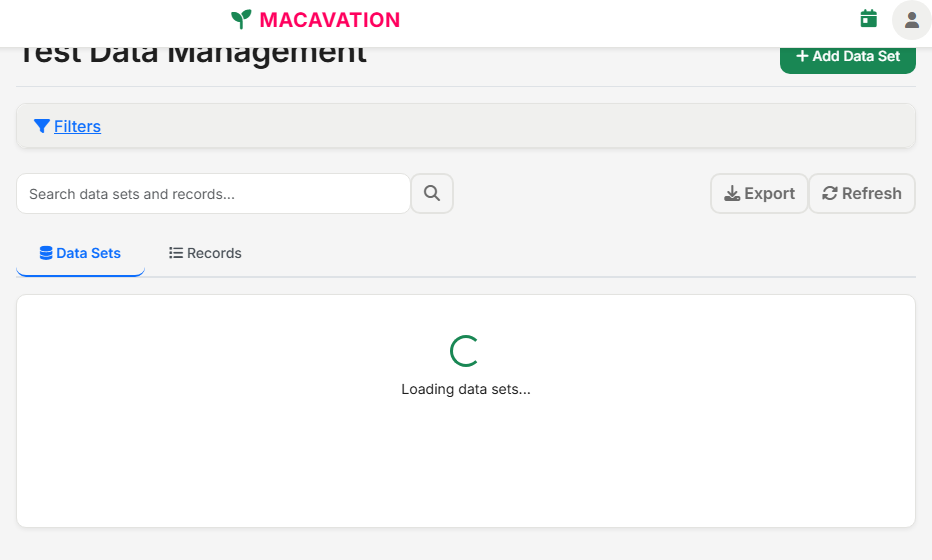
Test Data Set (dialog)
Dialog opened from the related module. Complete required fields (marked), then save. Use Cancel or the close button to dismiss without saving.
How to use this screen
Open from test data to define or edit a synthetic data set name, module, and purpose.
Save before adding child records.
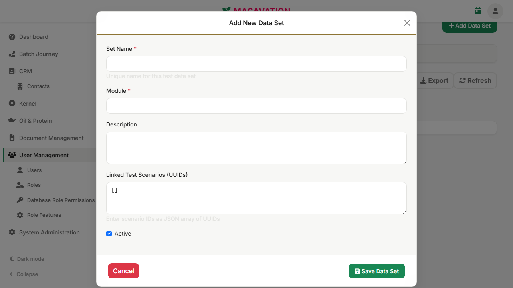
Test Scenario (dialog)
Dialog opened from the related module. Complete required fields (marked), then save. Use Cancel or the close button to dismiss without saving.
How to use this screen
Open to name and describe an automation scenario; link data sets if required.
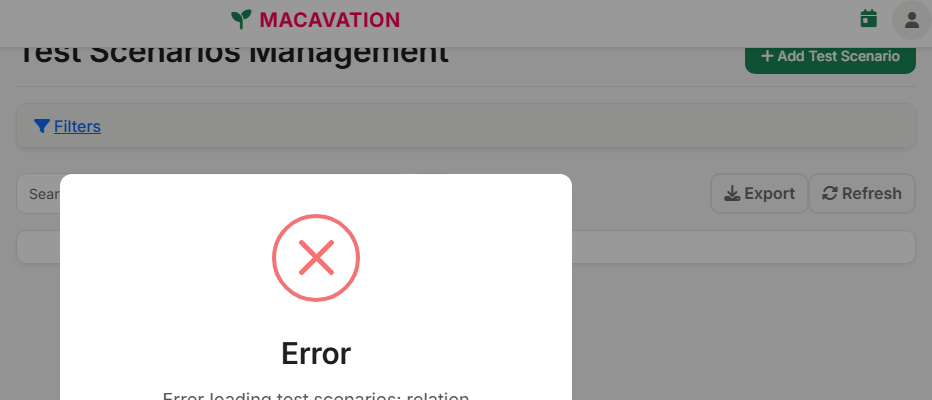
Test Scenarios (module)
QA automation scenarios (test environments).
For non-production environments: scenarios wrap automated tests—keep naming consistent with CI or Playwright jobs.
How to use this screen
Open Test scenarios in QA environments.
Create or edit scenarios that wrap automated tests; keep names aligned with CI or Playwright job names.
Link scenarios to data sets where your workflow requires seeded data.
Run or trigger tests only through approved automation paths—do not run destructive scripts against shared environments without notice.
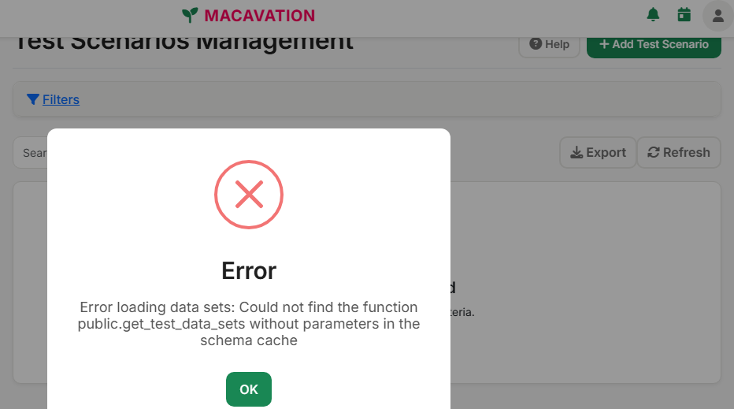
User (dialog)
Dialog opened from the related module. Complete required fields (marked), then save. Use Cancel or the close button to dismiss without saving.
How to use this screen
Open from Users when editing profile, role, or activation state.
Avoid shared accounts; use reset-password instead of telling another person the password.
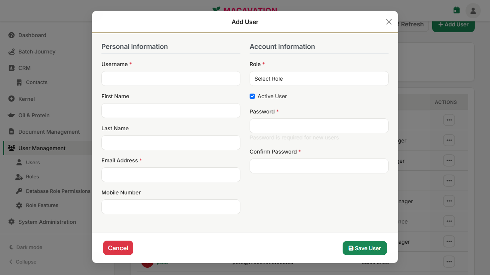
Users (module)
Create and maintain portal users, passwords, and assignments.
Create users with correct roles from the start; password resets and deactivation are safer than sharing accounts. Changes apply on next login.
How to use this screen
Open Users from User Management.
Search and filter the grid; click Add user (or equivalent) for a new login.
Assign the correct role immediately; fixing role mistakes later is harder than setting them at creation.
Use password reset flows instead of sharing credentials between people.
Deactivate leavers; permission changes apply on next login in most configurations.